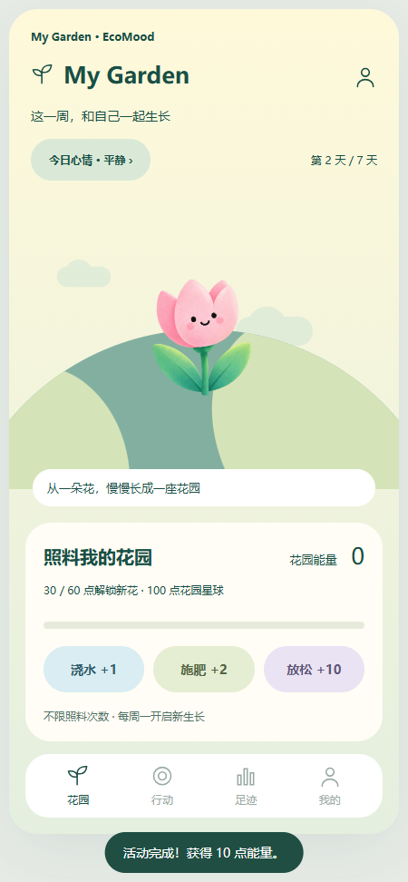
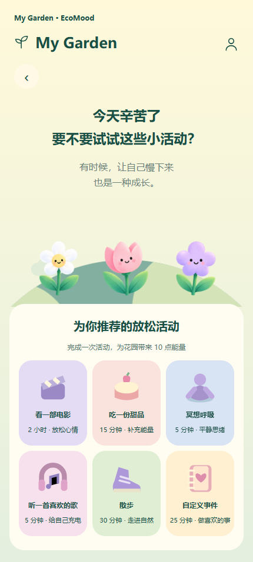

以数字花园为主题的移动端交互设计，把浇水反馈与呼吸练习融入日常使用。
从 Figma 界面与 SVG 素材到 React Native 页面实现，项目围绕花园、Water 浇水动画与 Relax 呼吸引导设计交互反馈。以下展示桌面预览和移动端页面。
点击浇水、施肥与放松活动，浏览花园成长与心情变化。能量和计时采用预设演示值，底部部分导航暂未连接交互。
如嵌入区域提示登录或无法加载，可点击上方按钮在 Figma 打开；访问权限由 Figma 文件共享设置决定。

